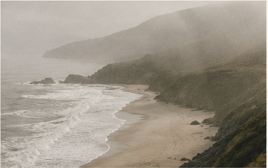
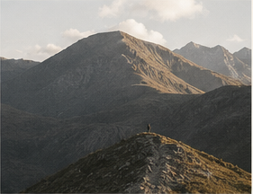

City Rhythm
City Humanity
Fragments of everyday life in the city. People, streets and the rhythm that connects them.
View CollectionPhotographer / Visual Archive
/projects
A selection of independent photography projects.
Each project is a personal exploration of place, life, and light.
City Humanity
Fragments of everyday life in the city. People, streets and the rhythm that connects them.
View Collection
Landscape
Coastlines, fog and open distance. A personal study of atmosphere and light.
View Collection
Portrait
Intimate portraits of people I've met. Quiet moments, honest expressions.
View Collection
Landscape
On the road in the mountains. Searching for scale, silence and light.
View Collection